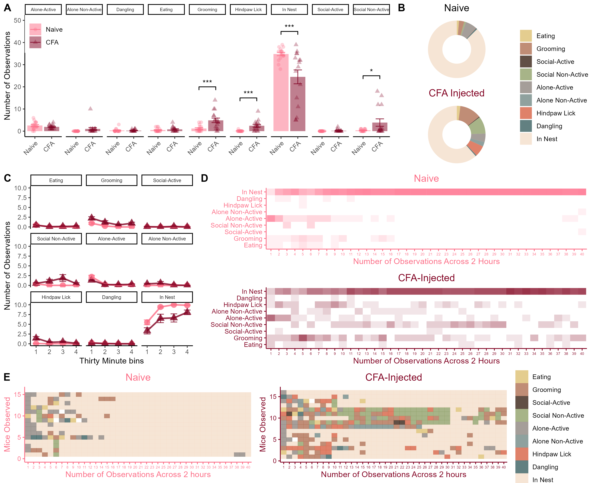

Figure 2 - Female Mice: Homecage Behaviors after CFA
Published Image

Figure 2. Homecage behaviors in female mice after injection of 10\(\mu l\) of 50% CFA. (A) Total number of observations of each behavior category across the two-hour observation period. (B) Donut charts showing the breakdown of average time spent engaging in each behavior for each group. (C) Line charts showcase group differences in changes in behavior across the two-hour long session. (D and E) are qualitative representations of the distribution of behaviors observed across the 40 time points. Data represented as mean value +/- SEM. \(***\) indicates p < 0.001.
Statistical Analyses
0.0.1 Overall MANOVA for HC Behavs for females
# All behaviours in the model throws an error - it knows that you need to leave one out I suppose.
## I thought originally that I would leave time in the nest out, but bc there is a clear sex difference in that behaviour I chose eating instead here:
fit <- manova(cbind(Grooming,`Social-Active`,`Social Non-Active`,`Alone-Active`,`Alone Non-Active`,`Hindpaw Lick`,`Dangling`,`In Nest`) ~ Condition, data=b)
summary(fit)## Df Pillai approx F num Df den Df Pr(>F)
## Condition 1 0.2647 5.355 8 119 0.000009378 ***
## Residuals 126
## ---
## Signif. codes: 0 '***' 0.001 '**' 0.01 '*' 0.05 '.' 0.1 ' ' 1- The overall MANOVA for female mice was also significant (F(1,30) = 3.05, p = 0.017)
0.0.2 Follow up:
# Prints out the individual ANOVAs for each behaviour
summary.aov(fit)## Response Grooming :
## Df Sum Sq Mean Sq F value Pr(>F)
## Condition 1 27.195 27.1953 20.121 0.00001617 ***
## Residuals 126 170.297 1.3516
## ---
## Signif. codes: 0 '***' 0.001 '**' 0.01 '*' 0.05 '.' 0.1 ' ' 1
##
## Response Social-Active :
## Df Sum Sq Mean Sq F value Pr(>F)
## Condition 1 0.0703 0.070313 1.8232 0.1794
## Residuals 126 4.8594 0.038566
##
## Response Social Non-Active :
## Df Sum Sq Mean Sq F value Pr(>F)
## Condition 1 24.50 24.5000 10.742 0.001354 **
## Residuals 126 287.38 2.2808
## ---
## Signif. codes: 0 '***' 0.001 '**' 0.01 '*' 0.05 '.' 0.1 ' ' 1
##
## Response Alone-Active :
## Df Sum Sq Mean Sq F value Pr(>F)
## Condition 1 0.781 0.78125 0.7768 0.3798
## Residuals 126 126.719 1.00570
##
## Response Alone Non-Active :
## Df Sum Sq Mean Sq F value Pr(>F)
## Condition 1 2 2.00000 4.5 0.03585 *
## Residuals 126 56 0.44444
## ---
## Signif. codes: 0 '***' 0.001 '**' 0.01 '*' 0.05 '.' 0.1 ' ' 1
##
## Response Hindpaw Lick :
## Df Sum Sq Mean Sq F value Pr(>F)
## Condition 1 11.281 11.2813 19.682 0.00001971 ***
## Residuals 126 72.219 0.5732
## ---
## Signif. codes: 0 '***' 0.001 '**' 0.01 '*' 0.05 '.' 0.1 ' ' 1
##
## Response Dangling :
## Df Sum Sq Mean Sq F value Pr(>F)
## Condition 1 0.0078 0.007813 0.095 0.7584
## Residuals 126 10.3594 0.082217
##
## Response In Nest :
## Df Sum Sq Mean Sq F value Pr(>F)
## Condition 1 212.7 212.695 20.546 0.00001336 ***
## Residuals 126 1304.4 10.352
## ---
## Signif. codes: 0 '***' 0.001 '**' 0.01 '*' 0.05 '.' 0.1 ' ' 1CFA-injected Female mice exhibited:
- Increased grooming during the observation session (F(1,30) = 12.26, p = 0.0015)
- Increased social inactive behaviour (F(1,30) = 4.626, p = 0.039)
- More hindpaw licks (F(1,30) = 15.95, p < 0.001)
- And less observations in the nest (F(1,30) = 10.93, p = 0.002)